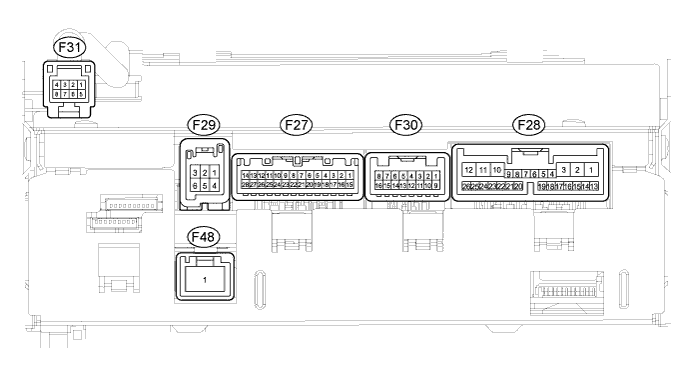
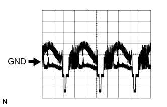
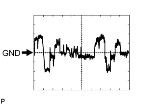
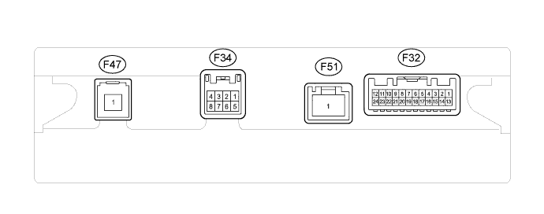

NAVIGATION SYSTEM > TERMINALS OF ECU |
| CHECK MULTI-DISPLAY |

Disconnect the F28 and F30 display connectors.
Measure the resistance and voltage according to the value(s) in the table below.
| Terminal No. (Symbol) | Wiring Color | Terminal Description | Condition | Specified Condition |
| F28-1 (+B1) - F28-10 (GND1) | R - W-B | Battery | Always | 10.5 to 16 V |
| F28-2 (ACC) - F28-10 (GND1) | GR - W-B | Accessory (ON) | Engine switch off | Below 1 V |
| Engine switch on (ACC) | 10.5 to 16 V | |||
| F28-3 (IG) - F28-10 (GND1) | G - W-B | Ignition (ON) | Engine switch off | Below 1 V |
| Engine switch on (IG) | 10.5 to 16 V | |||
| F28-10 (GND1) - Body ground | W-B - Body ground | Ground | Always | Below 1 Ω |
| F30-6 (GND2) - Body ground | B - Body ground | Ground | Always | Below 1 Ω |
Reconnect the F28 and F30 display connectors.
Measure the voltage and waveform according to the value(s) in the table below.
| Terminal No. (Symbol) | Wiring Color | Terminal Description | Condition | Specified Condition |
| F27-1 (TX-) - F28-10 (GND1) | L - W-B | AVC-LAN communication signal | Engine switch on (ACC) | 2.25 to 2.75V |
| F27-2 (TX+) - F28-10 (GND1) | W - W-B | AVC-LAN communication signal | Engine switch on (ACC) | 2.25 to 2.75V |
| F27-3 (TX2-) - F28-10 (GND1) | L - W-B | AVC-LAN communication signal | Engine switch on (ACC) | 2.25 to 2.75V |
| F27-4 (TX2+) - F28-10 (GND1) | W - W-B | AVC-LAN communication signal | Engine switch on (ACC) | 2.25 to 2.75V |
| F27-5 (TSW-) - F28-10 (GND1) | BR - W-B | Telephone relation switch signal | Always | Below 1 V |
| F27-9 (MACC) - F28-10 (GND1) | Y - W-B | Microphone amplifier power supply | Engine switch off | Below 1 V |
| Engine switch on (IG) | 4.75 to 5.25 V | |||
| F27-10 (MIN-) - F28-10 (GND1) | R - W-B | Microphone voice signal | See "Microphone & Voice Recognition Check" (Click here) | - |
| F27-11 (MIN+) - F28-10 (GND1) | G - W-B | Microphone voice signal | See "Microphone & Voice Recognition Check" (Click here) | - |
| F27-12 (SGND) - F28-10 (GND1) | BR - W-B | Signal ground | Always | Below 1 V |
| F27-13 (CA+) - F28-10 (GND1)*1 | B - W-B | Television camera power supply | Engine switch on (IG), shift lever moved to R | 5.8 to 6.5 V |
| F27-14 (CGND) - Body ground*1 | W - Body ground | Ground | Always | Below 1 V |
| F27-21 (IVO-) - F28-10 (GND1) | B - W-B | Voice guidance signal | Voice guidance provided | Waveform synchronized with sounds is output |
| F27-22 (IVO+) - F27-10 (GND1) | W - W-B | Voice guidance signal | Voice guidance provided | Waveform synchronized with sounds is output |
| F27-23 (SLD) - F28-10 (GND1) | Shielded - W-B | Shielded ground | Always | Below 1 V |
| F27-27 (V+) - F27-14 (CGND)*1 | R - W | Television camera image signal | Engine switch on (IG), shift lever moved to R | Pulse generation (refer to waveform 1) |
| F27-28 (V-) - F27-14 (CGND)*1 | Shielded - W | Shielded ground | Always | Below 1 V |
| F28-5 (HILL) - F28-10 (GND1) | W - W-B | Illumination signal | Light control switch off | Below 1 V |
| Light control switch on | 10.5 to 16 V | |||
| F28-7 (TC) - F28-10 (GND1) | V - W-B | Diagnosis ON signal | Engine switch on (IG) | 9 to 14 V |
| F28-8 (HAZ) - F28-10 (GND1) | O - W-B | Hazard warning signal | Hazard warning switch off | Below 1 V |
| Hazard warning switch on | 111 to 14 V | |||
| F28-9 (ARON) - F28-10 (GND1) | W - W-B | Front passenger side airbag ON/OFF indicator signal | Passenger airbag ON/OFF indicator off | Below 2 V |
| Passenger airbag ON/OFF indicator on | 11 to 14 V | |||
| F28-12 (ILL+) - F28-10 (GND1) | G - W-B | Illumination signal | Light control switch off | Below 1 V |
| Light control switch on | 10.5 to 16 V | |||
| F28-13 (REV) - F28-10 (GND1) | L - W-B | Reverse signal | See "Vehicle Signal Check" Mode (Click here) | - |
| F28-14 (SPD) - F28-10 (GND1) | V - W-B | Speed signal from combination meter | See "Vehicle Signal Check" Mode (Click here) | - |
| F28-15 (CMP-) - F28-10 (GND1)*3 | B - W-B | RDS-TMC signal | RDS-TMC function ON | Pulse generation |
| F28-16 (CMP+) - F28-10 (GND1)*3 | W - W-B | RDS-TMC signal | RDS-TMC function ON | Pulse generation |
| F28-17 (SLD) - F28-10 (GND1)*3 | Shielded - W-B | Shielded ground | Always | Below 1 V |
| F28-19 (SEUC) - F28-10 (GND1) | V - W-B | Security indicator signal | Security indicator illuminates (illuminates only for 60 sec. in alarm sounding state (blinking when system in alarm state)) | 10.5 to 16 V |
| F28-20 (AIR) - F28-10 (GND1) | B - W-B | Front passenger side airbag ON/OFF indicator signal | Passenger airbag ON/OFF indicator off | Below 2 V |
| Passenger airbag ON/OFF indicator on | 10.5 to 16 V | |||
| F28-21 (PBEW) - F28-10 (GND1) | Y - W-B | Passenger seat belt signal | Passenger seat occupied, seat belt fastened | 11 to 14 V |
| Passenger seat occupied, seat belt unfastened | Below 2 V | |||
| F28-23 (PKB) - F28-10 (GND1) | Y - W-B | Parking brake signal | See "Vehicle Signal Check" Mode (Click here) | - |
| F29-1 (VV+) - F28-10 (GND1) | W - W-B | DVD image signal | DVD played on radio receiver | Pulse generation (refer to waveform 2) |
| F29-4 (VV-) - F28-10 (GND1) | B - W-B | Signal ground | Always | Below 1 V |
| F30-1 (TX4-) - F28-10 (GND1) | L - W-B | AVC-LAN communication signal | Engine switch on (ACC) | 2.25 to 2.75 V |
| F30-2 (TX4+) - F28-10 (GND1) | W - W-B | AVC-LAN communication signal | Engine switch on (ACC) | 2.25 to 2.75 V |
| F30-3 (SGND) - F28-10 (GND1) | Shielded - W-B | Shielded ground | Always | Below 1 V |
| F30-4 (MCO-) - F28-10 (GND1) | W - W-B | Microphone voice signal | See "Microphone & Voice Recognition Check" (Click here) | - |
| F30-5 (MCO+) - F28-10 (GND1) | B - W-B | Microphone voice signal | See "Microphone & Voice Recognition Check" (Click here) | - |
| F30-7 (ACC2) - F28-10 (GND1) | GR - W-B | Accessory (ON) | Engine switch off | Below 1 V |
| Engine switch on (ACC) | 10.5 to 16 V | |||
| F30-10 (SI-) - F28-10 (GND1) | W - W-B | Voice guidance signal | Voice guidance provided | Waveform synchronized with sounds is input |
| F30-11 (SI+) - F28-10 (GND1) | B - W-B | Voice guidance signal | Voice guidance provided | Waveform synchronized with sounds is input |
| F30-12 (CMO-) - F30-6 (GND2)*2 | W - W-B | RDS-TMC signal | RDS-TMC function ON | Pulse generation |
| F30-13 (CMO+) - F30-6 (GND2)*2 | B - W-B | RDS-TMC signal | RDS-TMC function ON | Pulse generation |
| F30-15 (REV2) - F28-10 (GND1) | L - W-B | Reverse signal | See "Vehicle Sensors" Mode (Click here) | - |
| F30-16 (SPD2) - F28-10 (GND1) | V - W-B | Speed signal | See "Vehicle Sensors" Mode (Click here) | - |
| F31-2 (TEC+) - F28-10 (GND1) | R - W-B | Temperature up switch signal | Switch not pressed | Below 1 V |
| Switch pressed | Alternating between 3.5 V or higher and below 1 V | |||
| F31-3 (TES+) - F28-10 (GND1) | L - W-B | Temperature up switch signal | Switch not pressed | Below 1 V |
| Switch pressed | Alternating between 3.5 V or higher and below 1 V | |||
| F31-5 (AGND) - F28-10 (GND1) | B - N-B | Signal ground | Always | Below 1 Ω |
| F31-6 (TEC-) - F28-10 (GND1) | G - W-B | Temperature down switch signal | Switch not pressed | Below 1 V |
| Switch pressed | Alternating between 3.5 V or higher and below 1 V | |||
| F31-7 (TES-) - F28-10 (GND1) | W - W-B | Temperature down switch signal | Switch not pressed | Below 1 V |
| Switch pressed | Alternating between 3.5 V or higher and below 1 V | |||
| F31-8 (BGND) - F28-10 (GND1) | GR - W-B | Signal ground | Always | Below 1 Ω |
| F48-1 (GVIF) - F28-10 (GND1)*2 | B - W-B | Digital image signal | Navigation display ON | - |
 |
Using an oscilloscope, check waveform 1.
| Item | Content |
| Terminal No. (Symbol) | F27-27 (V+) - F27-14 (CGND) |
| Tool Setting | 0.2 V/DIV., 0.2 μs/DIV. |
| Condition | Engine switch on (IG), shift lever moved to R |
 |
Using an oscilloscope, check waveform 2.
| Item | Content |
| Terminal No. (Symbol) | F29-1 (VV+) - F28-10 (GND1) |
| Tool Setting | 0.2 V/DIV., 0.2 μs/DIV. |
| Condition | Disc played on multi-display |
| CHECK NAVIGATION ECU |

Disconnect the F32 ECU connector.
Measure the resistance and voltage according to the value(s) in the table below.
| Terminal No. (Symbol) | Wiring Color | Terminal Description | Condition | Specified Condition |
| F32-1 (+B) - F32-15 (GND1) | L - B | Battery | Always | 11 to 14 V |
| F32-13 (ACC) - F32-15 (GND1) | GR - B | Accessory (ON) | Engine switch off | Below 1 V |
| Engine switch on (ACC) | 11 to 14 V | |||
| F32-15 (GND1) - Body ground | B - Body ground | Ground | Always | Below 1 Ω |
Reconnect the F32 ECU connector.
Measure the voltage according to the value(s) in the table below.
| Terminal No. (Symbol) | Wiring Color | Terminal Description | Condition | Specified Condition |
| F32-4 (SPD) - F32-15 (GND1) | V - B | Speed signal | See "Vehicle Sensors" Mode (Click here) | - |
| F32-7 (SLD1) - F32-15 (GND1) | Shielded - B | Shielded ground | Always | Below 1 V |
| F32-8 (VOl-) - F32-15 (GND1) | W - B | Voice guidance signal | Voice guidance provided | A waveform synchronized with sounds is output |
| F32-9 (VOl+) - F32-15 (GND1) | B - B | Voice guidance signal | Voice guidance provided | A waveform synchronized with sounds is output |
| F32-11 (CMP+) - F32-10 (CMP-)* | B - W | RDS-TMC signal | RDS-TMC function ON | Pulse generation |
| F32-18 (TX-) - F32-15 (GND1) | L - B | AVC-LAN communication signal | Engine switch on (ACC) | 2 to 3 V |
| F32-19 (TX+) - F32-15 (GND1) | W - B | AVC-LAN communication signal | Engine switch on (ACC) | 2 to 3 V |
| F32-20 (REV) - F32-15 (GND1) | L - B | Reverse signal | See "Vehicle Sensors" Mode (Click here) | - |
| F34-3 (MIC+) - F32-15 (GND1) | B - B | Microphone voice signal | See "Microphone & Voice Recognition Check" (Click here) | - |
| F34-5 (MIC-) - F32-15 (GND1) | W - B | Microphone voice signal | See "Microphone & Voice Recognition Check" (Click here) | - |
| F51-1 (GVIF) - F32-15 (GND1) | B - B | Digital image signal | Navigation display ON | Pulse generation |
| CHECK RADIO RECEIVER (Click here) |
| CHECK STEREO COMPONENT AMPLIFIER (Click here) |
| CHECK PARKING ASSIST ECU (Click here) |